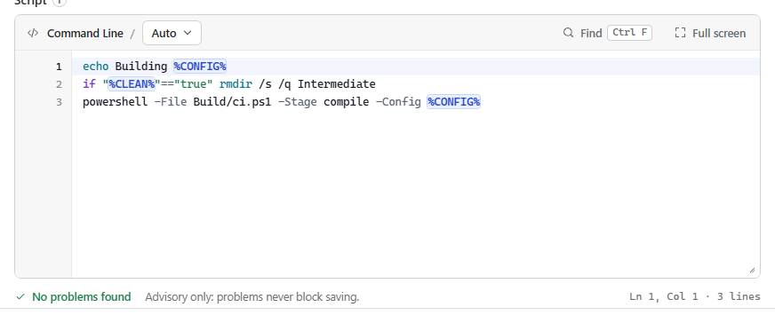

The script editor
Write step scripts with highlighting and parameter hints. The editor knows the build's parameters and warns you about mistakes before the build runs.
The script editor is used in the Command Line, PowerShell, Python, Node.js, Kotlin Script and C# Script steps. The classic Execute shell and Execute Windows batch command steps have a plain code box and also fill in %name% build parameters.

Edit a script
- Open the step from Settings › Build Steps with Edit, or add a new one.
- For Command Line, set Run to Custom script.
- Type the script in the editor. It has line numbers and colours for the language, in the light and the dark theme.
- Click Save. The script is saved exactly as you typed it, with its indentation and last line break.
The bar above the script has:
- the language: for Command Line, choose Shell, Batch or Auto (decided by the agent the step runs on);
- Find (Ctrl + F) to search the script;
- Full screen for long scripts.
The line below the script shows hints, for example an unknown parameter, an unclosed quote or a missing bracket, and the cursor position. When all is well it says No problems found.
Hints are advice only. They never stop you from saving.
Use echo ::group::Name and echo ::endgroup:: to make your own collapsible block in the build console, and ::warning:: or ::error:: to flag a line. See The build console.
Use %name% references
Write %NAME% in a script to use a build parameter. When the step runs, Buildspawn puts the value in its place. For example, with the parameter CONFIG set to Shipping:
Build/ci.ps1 -Stage compile -Config %CONFIG%runs as Build/ci.ps1 -Stage compile -Config Shipping.
- Type % in the editor. A list of the build's parameters opens.
- Keep typing to narrow it, then press Enter to insert one.
The list holds the build configuration's own parameters, inherited ones and the built-in ones, such as %build.number%, %build.vcs.number% and %build.checkoutDir%. See Parameters and Version control parameters.
Safeguards
- Secrets are never written into a script. Password parameters show by name only in the list. Read them from the environment variable instead, for example
$env:STEAM_UPLOAD_KEYin PowerShell. - A value changed in the Run dialog by someone without the Configure permission is refused.
- Branch names and other values from version control are only put in when they hold safe characters.